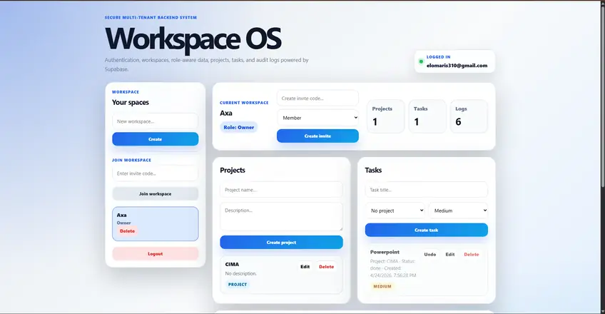
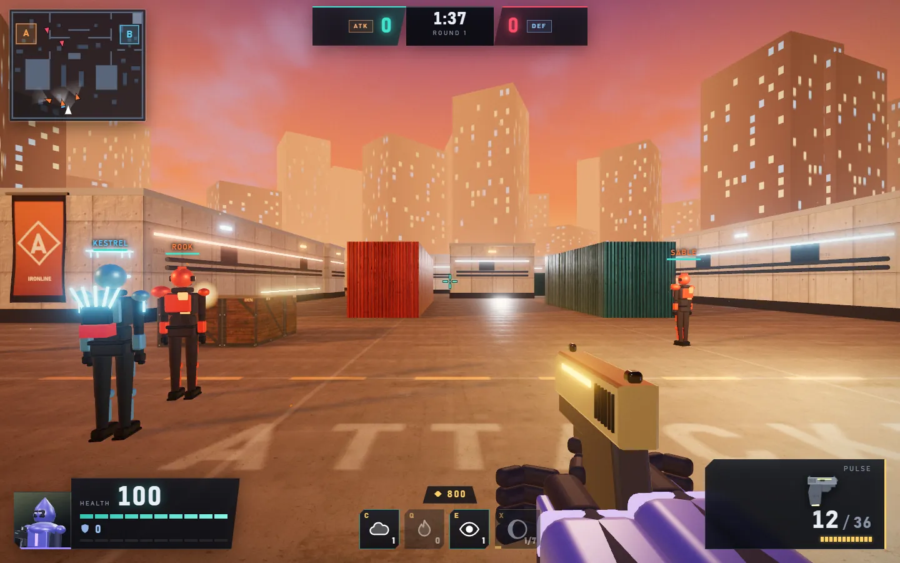
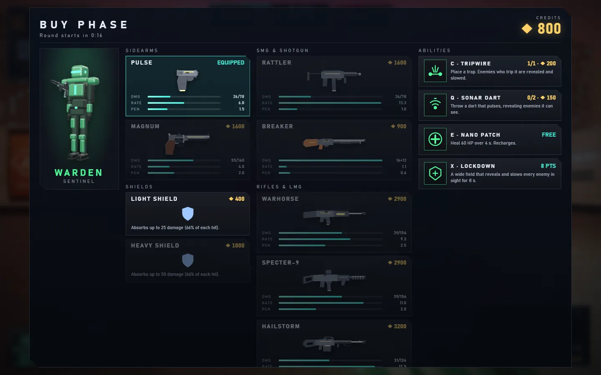
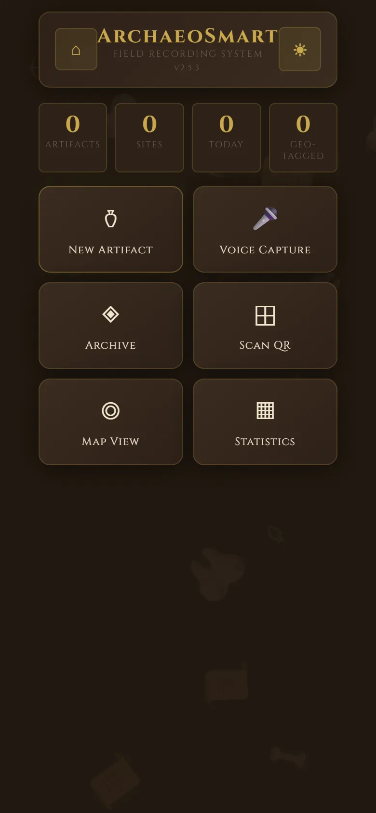
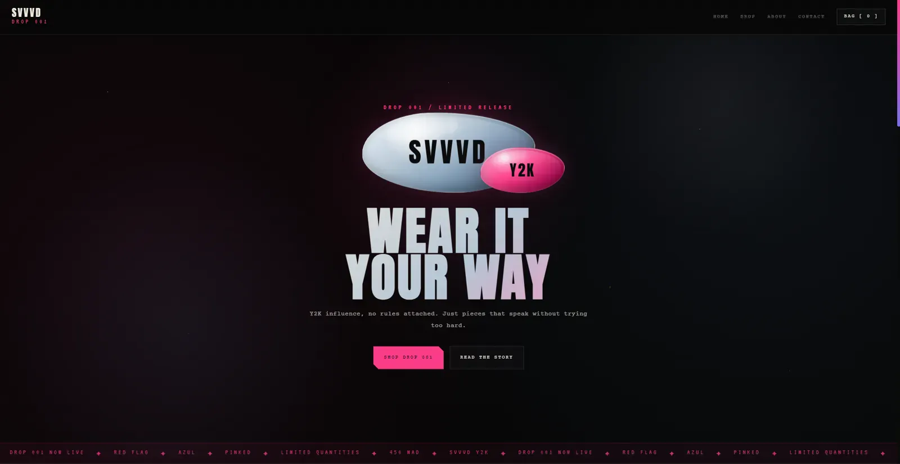
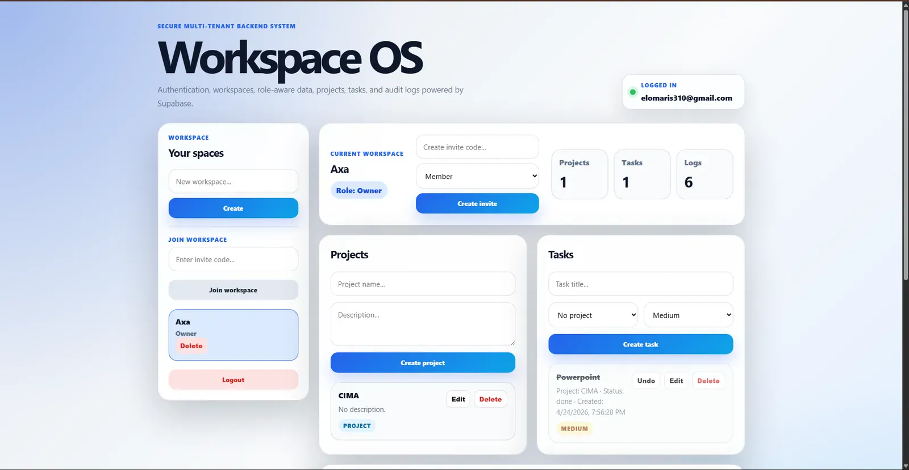
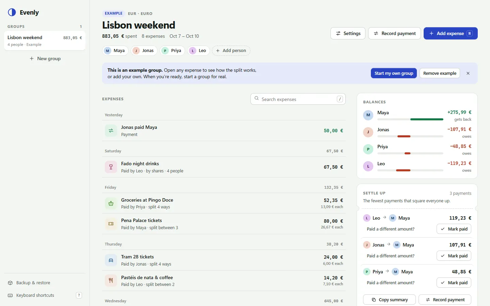
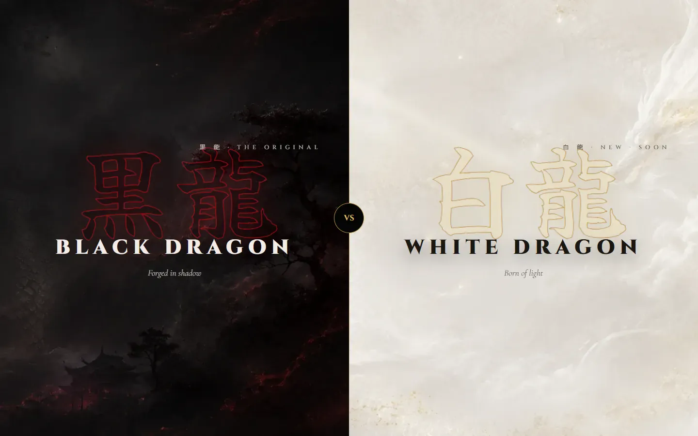
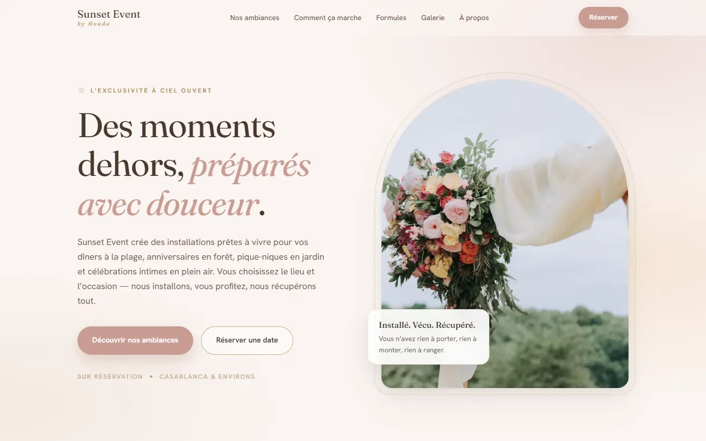

2020
My first program
A Mario-style platformer, made during lockdown. It barely worked. It was mine, and that was the moment software became something I make, not only use.
Deep space
Pick a world
I’m 16 and I build games, 
This portfolio is a trip through seven worlds. Each one is built in its own style, and the robot is my guide, rebuilt from my own game.
Five stops from my first program to an international final. The robot walks it with you.
2020
A Mario-style platformer, made during lockdown. It barely worked. It was mine, and that was the moment software became something I make, not only use.
Age 12
The World Robot Olympiad. The robots were fun, but the real hook was the loop: design it, test it, watch it fail, fix it.
2023
National winner on my first attempt, then the international final in Panama.
2024
No bootcamp and no classes, just documentation and stubbornness. My first real project was PoseSandbox, a 3D posing tool.
2026
I led team LOGIKO, first-timers except for me, to first place in Morocco’s FIRST LEGO League and a place at the championship in Houston. Our project was ArchaeoSmart.
Sep 2026
I started running AI models on my own PC and building with AI coding agents. Keep scrolling: the next world is made of glass.
A private AI assistant that runs on my own PC. One model plans each request, specialists do the work, and the screen only shows what actually ran.
Pick a request. Qwen3 14B splits it into tasks and sends each one to a specialist.
Pick a request above
I asked for an explanation, a drawn circle and an animation. I got an office scene and lost the written answer. Now requests split into explicit tasks, the text comes first, and exact shapes go to a renderer. Same request after the fix: 48 seconds, all three outputs.
One “quality” run spent about 33 minutes inside Wan, rendering 121 frames at 1280×1216. A pixel budget and two-second defaults brought a controlled test from about 3 min 20 s to 2 min 22 s.
An image failed to save with a Windows permission error. The first fix passed a mocked test and failed a real one. The folders moved inside the project, and a real generation proved it: 19 of 19 tests.
A 30B coder, an image model and a video model can’t share one graphics card, so jobs queue and models move on and off it. This machine is that queue. Pick a crate.
Code by Codex, an AI coding agent. Product, testing and the routing idea: me.
A 5v5 tactical shooter that runs in a browser tab. Three maps, five agents, nine weapons, bots that trade, lurk and save.


Terminal at sunset. Teammates hold the A site.
The game runs in a pure simulation at 128 ticks a second. Bots and the network write to it; the renderer, the HUD and the sound only read it. That is why every rule, weapon and bot can be tested without playing.
It started as Vector Strike, my first attempt: one map, four weapons, rules tangled into the rendering. Everything it got wrong became Ironline’s plan.
Code by Claude Code. Design, scope and sign-off: me.
A third-person action RPG that ships as one HTML file: a valley with a village, caves, spells, enemies, bosses and a sky that runs from dawn to night. A fan-made region inspired by Mushoku Tensei.
The game has five schools of magic. Cast one.
Milestone 1, a vertical slice. Code by Codex. A personal fan project, not commercial.
Real sites and tools, live on the internet. Some for real businesses, with real customers and real money.

Offline field app, 2025–26
Our FLL innovation project: archaeologists record finds by voice, with GPS, QR labels and sketches, and it all works with no signal. Our team won first place in Morocco.

Streetwear store, 2026
The store and the identity for my cousin’s Y2K streetwear brand: 35 pieces in three colourways. Two of the three are sold out.

Multi-tenant backend, 2026
Built to learn backends: accounts, workspaces, roles, invite codes and tasks, with the database itself refusing anything you’re not allowed to see.
3D posing tool, 2024–25
My first website: pose a 3D figure in the browser, pin a reference image, add props and export a PNG. No account, no install.

Expense splitter, 2026
Split a trip’s costs and settle up in as few payments as possible. Money is kept in whole cents, so nothing gets lost to rounding.

Katana shop site, 2026
A product site for a katana shop in Marrakech. A split “Black Dragon vs White Dragon” hero, then details, pricing and ordering through WhatsApp or Instagram.

Event booking site, 2026
A French-language site for an outdoor event service near Casablanca: beach dinners, picnics and celebrations, with packages and WhatsApp booking.
Click anywhere on the paper to splash some ink.
Two films for the senior student board at GS Universalis in Casablanca: 98 seconds on their year, and a 32-second team reveal. Every frame is drawn by code on a canvas and encoded with ffmpeg. The music is generated in code too.
Stills show title cards only, no faces or students’ names. Code by Claude Code; I picked the story and the sources.
A car’s open differential, running live. Move across it, or use the arrow keys, to steer: one wheel speeds up, the other slows by exactly as much. Every number comes from real gear ratios.
Since September, most of my code has been written by AI coding agents. I decide what gets built, I write the brief, I test every result and I send back what breaks. Every project here says who wrote what.
Ironline’s rules live in a simulation that knows nothing about graphics, so every rule, weapon and bot is tested without playing. The agent isn’t done until they pass.
Test Files 27 passed (27)
Tests 290 passed (290)
Duration 10.34sIronline’s test run, 14 October 2026.
A free cloud chatbot beat SimoAI on a parser task. So we built a benchmark: eight JavaScript tasks with hidden tests, one attempt each.
52 of 65 hidden test groups and 4 of 8 tasks. Good for routine code; parsers still need checking.
One honest test, asking SimoAI for a circle, changed its whole design. Breaking things on purpose is most of the job.
The mark is an S inside a ring: a door between worlds.
Audiowide Poppins Outfit New Rocker Darker Grotesque Limelight Bangers
Thanks for playing.
Competitions, internships, a website for your business, or a question about anything you just travelled through.
Instagram (opens in a new tab)GitHub (opens in a new tab)Travel again
Home base: Casablanca, seen from the air in 1930.